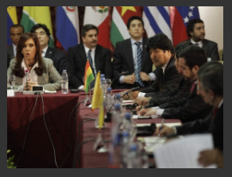

Quito. AFP La vasta sublevación de policías ecuatorianos desatada ayer por una ley que limita sus
dejó al menos dos muertos, tras tener al país en vilo en una jornada en la que el presidente Rafael Correa
fue rescatado por militares de un hospital donde estaba retenido.
Correa calificó el levantamiento como “golpe de Estado” y recibió el respaldo unánime de la comunidad internacional,
incluyendo a la ONU y la OEA, además de Estados Unidos y de distintos gobiernos latinoamericanos.
Entre estos últimos, la Unión de Naciones Suramericanas (Unasur) condenó la sublevación durante una cumbre convocada
de urgencia en Buenos Aires, la noche de ayer, expresando en su declaración final:
“la necesidad de que los responsables de la asonada golpista sean juzgados y condenados”.
La cumbre también resolvió el viaje de los cancilleres de la Unasur hoy a Quito para brindar su respaldo a Correa. “Hoy el presidente no ha claudicado como hicieron otros cobardes”, dijo Correa al ser recibido como un héroe ante una multitud congregada frente al Palacio de Gobierno, tras su rescate armado, aludiendo a su negativa a negociar con los policías que lo retuvieron durante unas doce horas.
“Jamás aceptamos negociar nada bajo presión, nada. Por el diálogo todo”, afirmó Correa, que más temprano les dijo a sus captores: “O salgo como presidente de una nación digna o salgo como un cadáver”. El levantamiento de los policías se inició ayer por la mañana con la toma de varios cuarteles en Quito, Guayaquil y Cuenca, en protesta por una ley que recorta ciertos beneficios económicos a miembros de los cuerpos de policía, entre otros empleados estatales.
El presidente acudió a uno de los cuarteles en Quito a hablar con los policías y a decirles que no cedería ante sus presiones. “Señores si quieren matar al presidente, aquí está, mátenlo si les da la gana, mátenlo si tienen poder, mátenlo si tienen valor en vez de estar en la muchedumbre cobardemente escondidos”, exclamó Correa al realizar un gesto dramático: se aflojó la corbata y se desabotonó el cuello de la camisa.
Los sublevados atacaron al mandatario y a su comitiva a la salida del cuartel con gases lacrimógenos, y Correa tuvo que ser ingresado en camilla en un hospital policial aledaño, donde fue cercado por los policías. Luego, policías rebeldes ocuparon el Parlamento, y militares de la Fuerza Aérea bloquearon la pista del aeropuerto de Quito
“Dos policías murieron luego de ser trasladados al hospital de su institución”, dijo el portavoz de la Cruz Roja, Fernando Gandarillas, en referencia al operativo que permitió rescatar a Correa de su reclusión en el hospital, y añadió que otras 37 personas resultaron heridas a causa de los disparos entre fuerzas leales y uniformados rebeldes. Correa aseguró que los policías sublevados planeaban asesinarlo, y agradeció en particular al Grupo de Operaciones Especiales de la Policía (GOE), por resguardar las instalaciones del hospital policial.
“Si no, esa horda de salvajes que querían matar, que querían sangre, hubieran entrado al hospital a buscar al presidente y probablemente no estaría contando lo que estoy diciendo en estos momentos porque ya hubiera pasado a mejor vida”, señaló el mandatario en el Palacio de Gobierno. También anunció que destituirá a los policías que tomaron parte de la sublevación, y dijo que no derogará la ley que motivó el amotinamiento. “Estos supuestos policías nacionales avergüenzan a la institución policial, tendrán que salir de las filas policiales”, afirmó.
En este contexto, el comandante de la Policía nacional, general Freddy Martínez, renunció a su cargo, indicó un portavoz policial que requirió el anonimato.La reunión de la Unasur en Buenos Aires contó con la presencia de la presidenta argentina Cristina Fernández, el boliviano Evo Morales, el peruano Alan García, el uruguayo José Mujica, el chileno Sebastián Piñera, el colombiano Juan Manuel Santos y el venezolano Hugo Chávez.
Antes, la Organización de Estados Americanos (OEA) celebró un encuentro en Washington en el que el secretario general de la organización, José Miguel Insulza, calificó a la crisis ecuatoriana de “tentativa de golpe de Estado”. Los gobiernos de Estados Unidos, Brasil, Venezuela, Cuba, México, Colombia, Chile, España y la Unión Europea, entre otros, condenaron a los rebeldes. Perú y Colombia cerraron sus fronteras con Ecuador.